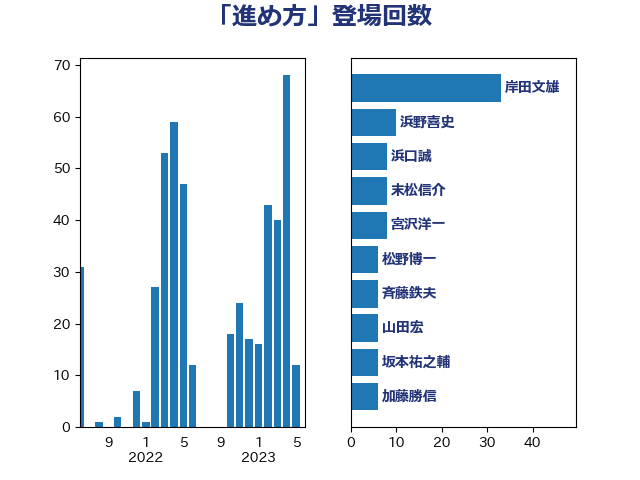

単語「進め方」

| 岸田文雄 | 自由民主党 | 33 回 |
| 浜野喜史 | 国民民主党 | 10 回 |
| 浜口誠 | 国民民主党 | 8 回 |
| 末松信介 | 自由民主党 | 8 回 |
| 宮沢洋一 | 自由民主党 | 8 回 |
| 松野博一 | 自由民主党 | 6 回 |
| 斉藤鉄夫 | 公明党 | 6 回 |
| 山田宏 | 自由民主党 | 6 回 |
| 坂本祐之輔 | 立憲民主党 | 6 回 |
| 加藤勝信 | 自由民主党 | 6 回 |
| 西岡秀子 | 国民民主党 | 5 回 |
| 猪口邦子 | 自由民主党 | 5 回 |
| 岡田直樹 | 自由民主党 | 5 回 |
| 小野泰輔 | 日本維新の会 | 5 回 |
| 鶴保庸介 | 自由民主党 | 4 回 |
| 赤木正幸 | 日本維新の会 | 4 回 |
| 笠井亮 | 日本共産党 | 4 回 |
| 福山哲郎 | 立憲民主党 | 4 回 |
| 永岡桂子 | 自由民主党 | 4 回 |
| 鬼木誠 | 立憲民主党 | 3 回 |
| 阿部司 | 日本維新の会 | 3 回 |
| 金子恭之 | 自由民主党 | 3 回 |
| 梅村みずほ | 日本維新の会 | 3 回 |
| 川田龍平 | 立憲民主党 | 3 回 |
| 山本順三 | 自由民主党 | 3 回 |
| 小倉將信 | 自由民主党 | 3 回 |
| 國重徹 | 公明党 | 3 回 |
| 倉林明子 | 日本共産党 | 3 回 |
| 青木愛 | 立憲民主党 | 2 回 |
| 青木一彦 | 自由民主党 | 2 回 |
| 阿部知子 | 立憲民主党 | 2 回 |
| 長谷川岳 | 自由民主党 | 2 回 |
| 鈴木俊一 | 自由民主党 | 2 回 |
| 野村哲郎 | 自由民主党 | 2 回 |
| 足立康史 | 日本維新の会 | 2 回 |
| 西村康稔 | 自由民主党 | 2 回 |
| 葉梨康弘 | 自由民主党 | 2 回 |
| 自見はなこ | 自由民主党 | 2 回 |
| 空本誠喜 | 日本維新の会 | 2 回 |
| 矢倉克夫 | 公明党 | 2 回 |
| 田村まみ | 国民民主党 | 2 回 |
| 玉木雄一郎 | 国民民主党 | 2 回 |
| 梅村聡 | 日本維新の会 | 2 回 |
| 柴田巧 | 日本維新の会 | 2 回 |
| 林芳正 | 自由民主党 | 2 回 |
| 東徹 | 日本維新の会 | 2 回 |
| 斎藤嘉隆 | 立憲民主党 | 2 回 |
| 後藤茂之 | 自由民主党 | 2 回 |
| 平林晃 | 公明党 | 2 回 |
| 平口洋 | 自由民主党 | 2 回 |
| 山谷えり子 | 自由民主党 | 2 回 |
| 山田勝彦 | 立憲民主党 | 2 回 |
| 山岸一生 | 立憲民主党 | 2 回 |
| 山岡達丸 | 立憲民主党 | 2 回 |
| 山下芳生 | 日本共産党 | 2 回 |
| 小沢雅仁 | 立憲民主党 | 2 回 |
| 室井邦彦 | 日本維新の会 | 2 回 |
| 大島敦 | 立憲民主党 | 2 回 |
| 大串博志 | 立憲民主党 | 2 回 |
| 塩田博昭 | 公明党 | 2 回 |
| 城井崇 | 立憲民主党 | 2 回 |
| 中野洋昌 | 公明党 | 2 回 |
| 中村裕之 | 自由民主党 | 2 回 |
| 中島克仁 | 立憲民主党 | 2 回 |
| 齋藤健 | 自由民主党 | 1 回 |
| 鷲尾英一郎 | 自由民主党 | 1 回 |
| 鰐淵洋子 | 公明党 | 1 回 |
| 高見康裕 | 自由民主党 | 1 回 |
| 高良鉄美 | 無所属 | 1 回 |
| 高橋千鶴子 | 日本共産党 | 1 回 |
| 高橋克法 | 自由民主党 | 1 回 |
| 高木真理 | 立憲民主党 | 1 回 |
| 馬淵澄夫 | 立憲民主党 | 1 回 |
| 馬場成志 | 自由民主党 | 1 回 |
| 音喜多駿 | 日本維新の会 | 1 回 |
| 長谷川英晴 | 自由民主党 | 1 回 |
| 長谷川淳二 | 自由民主党 | 1 回 |
| 輿水恵一 | 公明党 | 1 回 |
| 赤嶺政賢 | 日本共産党 | 1 回 |
| 谷田川元 | 立憲民主党 | 1 回 |
| 角田秀穂 | 公明党 | 1 回 |
| 西田昭二 | 自由民主党 | 1 回 |
| 藤木眞也 | 自由民主党 | 1 回 |
| 蓮舫 | 立憲民主党 | 1 回 |
| 萩生田光一 | 自由民主党 | 1 回 |
| 茂木敏充 | 自由民主党 | 1 回 |
| 若林洋平 | 自由民主党 | 1 回 |
| 若宮健嗣 | 自由民主党 | 1 回 |
| 船田元 | 自由民主党 | 1 回 |
| 舟山康江 | 国民民主党 | 1 回 |
| 篠原孝 | 立憲民主党 | 1 回 |
| 神田潤一 | 自由民主党 | 1 回 |
| 礒崎哲史 | 国民民主党 | 1 回 |
| 石橋通宏 | 立憲民主党 | 1 回 |
| 田畑裕明 | 自由民主党 | 1 回 |
| 田所嘉徳 | 自由民主党 | 1 回 |
| 田中健 | 国民民主党 | 1 回 |
| 牧野たかお | 自由民主党 | 1 回 |
| 牧義夫 | 立憲民主党 | 1 回 |
| 牧島かれん | 自由民主党 | 1 回 |
| 熊谷裕人 | 立憲民主党 | 1 回 |
| 漆間譲司 | 日本維新の会 | 1 回 |
| 渡辺創 | 立憲民主党 | 1 回 |
| 浜田靖一 | 自由民主党 | 1 回 |
| 浅野哲 | 国民民主党 | 1 回 |
| 浅田均 | 日本維新の会 | 1 回 |
| 池田佳隆 | 自由民主党 | 1 回 |
| 池下卓 | 日本維新の会 | 1 回 |
| 橘慶一郎 | 自由民主党 | 1 回 |
| 横沢高徳 | 立憲民主党 | 1 回 |
| 森山浩行 | 立憲民主党 | 1 回 |
| 森屋宏 | 自由民主党 | 1 回 |
| 梶山弘志 | 自由民主党 | 1 回 |
| 松沢成文 | 日本維新の会 | 1 回 |
| 松本剛明 | 自由民主党 | 1 回 |
| 杉尾秀哉 | 立憲民主党 | 1 回 |
| 杉久武 | 公明党 | 1 回 |
| 本村伸子 | 日本共産党 | 1 回 |
| 本庄知史 | 立憲民主党 | 1 回 |
| 末次精一 | 立憲民主党 | 1 回 |
| 新藤義孝 | 自由民主党 | 1 回 |
| 掘井健智 | 日本維新の会 | 1 回 |
| 徳永エリ | 立憲民主党 | 1 回 |
| 後藤祐一 | 立憲民主党 | 1 回 |
| 庄子賢一 | 公明党 | 1 回 |
| 平木大作 | 公明党 | 1 回 |
| 工藤彰三 | 自由民主党 | 1 回 |
| 岩田和親 | 自由民主党 | 1 回 |
| 岩渕友 | 日本共産党 | 1 回 |
| 山田俊男 | 自由民主党 | 1 回 |
| 山添拓 | 日本共産党 | 1 回 |
| 山本太郎 | れいわ新選組 | 1 回 |
| 山口晋 | 自由民主党 | 1 回 |
| 山口壯 | 自由民主党 | 1 回 |
| 小林鷹之 | 自由民主党 | 1 回 |
| 小川淳也 | 立憲民主党 | 1 回 |
| 寺田静 | 無所属 | 1 回 |
| 宮口治子 | 立憲民主党 | 1 回 |
| 奥野総一郎 | 立憲民主党 | 1 回 |
| 太田房江 | 自由民主党 | 1 回 |
| 大西英男 | 自由民主党 | 1 回 |
| 大椿ゆうこ | 立憲民主党 | 1 回 |
| 大岡敏孝 | 自由民主党 | 1 回 |
| 堀内詔子 | 自由民主党 | 1 回 |
| 国光あやの | 自由民主党 | 1 回 |
| 和田義明 | 自由民主党 | 1 回 |
| 吉田豊史 | 無所属 | 1 回 |
| 吉田久美子 | 公明党 | 1 回 |
| 吉田はるみ | 立憲民主党 | 1 回 |
| 吉田とも代 | 日本維新の会 | 1 回 |
| 吉川沙織 | 立憲民主党 | 1 回 |
| 古賀友一郎 | 自由民主党 | 1 回 |
| 古賀之士 | 立憲民主党 | 1 回 |
| 北側一雄 | 公明党 | 1 回 |
| 勝部賢志 | 立憲民主党 | 1 回 |
| 務台俊介 | 自由民主党 | 1 回 |
| 加藤鮎子 | 自由民主党 | 1 回 |
| 佐藤英道 | 公明党 | 1 回 |
| 佐々木さやか | 公明党 | 1 回 |
| 住吉寛紀 | 日本維新の会 | 1 回 |
| 伊東信久 | 日本維新の会 | 1 回 |
| 伊佐進一 | 公明党 | 1 回 |
| 仁比聡平 | 日本共産党 | 1 回 |
| 中谷元 | 自由民主党 | 1 回 |
| 下野六太 | 公明党 | 1 回 |
| 下村博文 | 自由民主党 | 1 回 |
| 上野通子 | 自由民主党 | 1 回 |
| 上月良祐 | 自由民主党 | 1 回 |
| 三木圭恵 | 日本維新の会 | 1 回 |
| 三原じゅん子 | 自由民主党 | 1 回 |
| 一谷勇一郎 | 日本維新の会 | 1 回 |
| ながえ孝子 | 無所属 | 1 回 |
| おおつき紅葉 | 立憲民主党 | 1 回 |